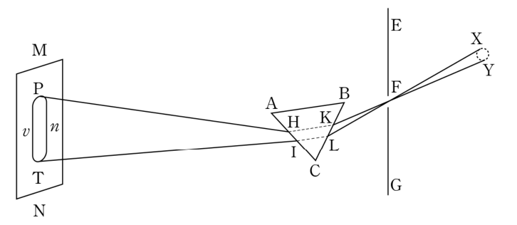
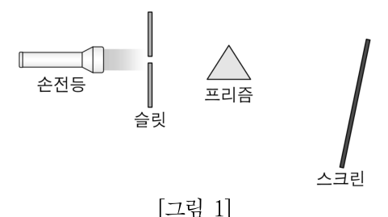
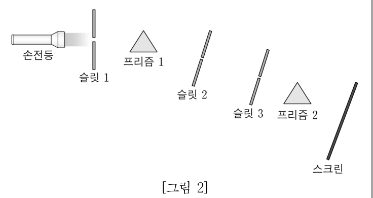

뉴턴의 프리즘 실험 — 유추적 사고로 세운 가설, 색에 따른 굴절 정도, 반증된 빛의 개념Newton's prism experiments · analogical reasoning · dispersion · refuting 'pure white light / prism colours light'
<자료 1>은 뉴턴의 프리즘 실험을 도입하는 과정에서 교사가 학생들에게 제시한 과학사의 일부이고, <자료 2>는 뉴턴의 프리즘 실험 활동지의 일부이다. <작성 방법>에 따라 서술하시오. [4점]
17세기 망원경과 현미경이 발달하면서 광학 기기의 제조와 연구가 활발해졌다. 그러나 학자들은 여전히 백색광이 순수하고 균질한 빛이고, 프리즘이 백색광을 물들여 다양한 색상이 보인다는 고대 개념을 고집하고 있었다. 이러한 빛의 성질에 대한 개념을 반증한 실험이 뉴턴에 의해 이루어졌다. 1665년 흑사병으로 대학이 문을 닫아 고향에 머물렀던 뉴턴은 프리즘으로 다양한 광학 실험을 수행하였고, 그 결과를 논문으로 발표하였다. 그는 논문에서 햇빛이 프리즘을 통과한 후 길쭉한 모양으로 색이 퍼지는 현상에 놀랐다고 적고, 그 관찰 과정과 결과를 묘사한 그림을 다음과 같이 제시하였다.

뉴턴은 둥근 구멍을 지나 진행한 빛이 프리즘을 통과하여 맞은편 벽에 길쭉한 모양으로 색이 퍼져 나타나는 현상을 다양한 실험을 통해 반복적으로 확인하였고, 그 이유를 알아내고자 하였다. ㉠ 뉴턴은 테니스 라켓에 맞은 공의 경로가 꺾이는 것처럼 프리즘이 빛을 꺾이게 하는 것일지도 모른다는 가설을 세우고, 이를 확인할 수 있는 실험을 수행하였다.
○ 실험 제목: 뉴턴의 프리즘 실험 따라 해 보기
○ 실험 과정
(1) [그림 1]과 같이 손전등(백색등), 슬릿, 프리즘, 스크린을 배치한다. 주위를 어둡게 하고, 슬릿을 통과한 손전등의 빛이 프리즘을 통과하게 하여 스크린에 나타난 스펙트럼을 관찰하고, 빨간색과 파란색의 위치를 표시해 보자.
(2) [그림 1]의 장치에 [그림 2]와 같이 슬릿과 프리즘을 추가로 배치한다. 손전등을 켜고 프리즘 1을 조절하여 프리즘 2로 빨간색 빛만 입사하게 하고, 빨간색 빛이 스크린에 나타난 위치를 표시해 보자.
(3) 프리즘 1을 조절하여 프리즘 2로 파란색 빛만 입사하게 하고, 파란색 빛이 스크린에 나타난 위치를 표시해 보자.
○ 실험 정리
(1) ㉡ 실험 결과를 종합하여 과학사 자료에서 뉴턴이 궁금해 했던 길쭉한 모양으로 색이 퍼지는 이유를 설명해 보자.
(2) ㉢ 제시된 과학사 자료를 바탕으로 뉴턴이 2가지 실험을 통해 반증하려 한 빛의 성질에 대한 생각을 적어 보자.
([그림 1], [그림 2]는 아래 그림 참고)
- <자료 1>의 밑줄 친 ㉠에서 사용된 과학적 사고의 유형을 쓰고, 그 근거를 설명할 것.
- <자료 2>의 밑줄 친 ㉡과 ㉢으로 적절한 내용을 <자료 1>과 <자료 2>에 근거하여 순서대로 서술할 것.
- 프리즘을 지난 햇빛은 무지개색으로 퍼진다(분산).
- 유리의 굴절률은 파란빛에서 더 크다 → 더 많이 꺾인다.
- 유추: 익숙한 현상(라켓에 맞은 공)과의 닮은 점으로 낯선 현상을 설명.


㉠에서 사용된 과학적 사고의 유형을 쓰고, 그 근거를 설명하시오.
- 테니스공의 경로가 꺾이는 현상(익숙한 것) ↔ 빛이 프리즘에서 꺾이는 현상(낯선 것).
㉡으로 적절한 내용을 서술하시오.
- (1)에서 빨강·파랑의 위치, (2)(3)에서 한 색만 보냈을 때의 결과.
㉢으로 적절한 내용을 서술하시오.
- <자료 1>의 고대 개념 두 가지.
퍼진 빛을 볼록 렌즈나 거꾸로 놓은 프리즘으로 다시 모으면 어떻게 되는가? 이 결과가 의미하는 바는?
- 재합성 실험.